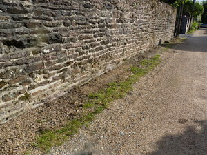
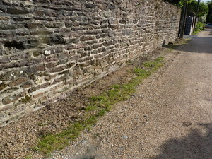

Les villes sont devenues des espaces maitrisés ne laissant que peu de place à la spontanéité. Cependant, quelques lieux échappent encore à la maitrise humaine : les délaissés.


 

D’un autre coté, les citadins souhaitent de plus en plus renouer avec la nature et voir du « vert » investir la ville : 7 français sur 10 pensent que le végétal n’est pas assez présent en ville selon une enquête UNEP-IPSOS 2010.
Pour améliorer votre cadre de vie et augmenter la biodiversité, nous vous proposons de semer et planter vous-même la ville de demain. Que ce soit sur l’espace public ou votre balcon, la nature a sa place en ville et c’est vous qui allez la végétaliser!
Notre projet consiste en un ensemenseur permettant à chacun de végétaliser la ville dans un esprit « libre service » de mise à disposition de graines. Cet ensemenseur se clipse sur les poteaux d’arrêts de bus par exemple, symbole des lieux en commun et du transport, donc de la dissémination des graines.